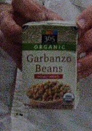
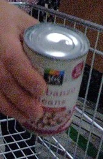
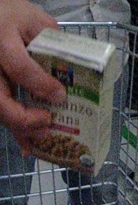
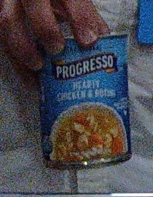
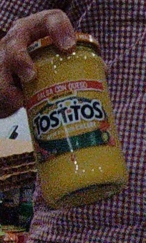
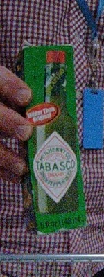
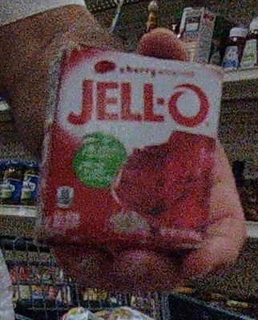

Thinking Fast and Slow for Label-Free Open-Catalog Product Retrieval
Artificial Intelligence Graduate Program, University of the Philippines Diliman

Store frame

365 Organic
Garbanzo Beans
Abstract
Physical Retail AI Workshop
January 4, 2027 · 9:00–9:15 a.m.
Grocery retrieval systems match a camera frame to catalog texts with a frozen vision-language model (VLM) and a reranker trained on labels. New brands enter an open catalog with text and at most one picture per product, but no labeled frames. Store cameras gradually record unlabeled views as shoppers pick up these products. To adapt from these frames, we propose ShelfTaught, a fast thinker (System 1) and slow thinker (System 2) approach.
The frozen fast thinker ranks new products at insertion and answers when its calibrated shortlist holds one entry or its top choice has too few training targets. Otherwise the slow thinker matches image patches to tokens in the shortlisted descriptions. An offline VLM teacher answers multiple choice questions about candidate texts, with catalog pictures for ambiguous frames. A label model combines its answers and retrieval scores with a von Mises–Fisher mixture of frame embeddings, balancing assignments across products to select training targets. We calibrate on validation labels across brands and verify packaging cues on unlabeled images from all folds.
On held-out brands, Recall@1 rises from 78.7% to 91.2% on GroceryVision, from 94.4% to 95.5% on Retail-786k and from 75.8% to 93.1% on Klasson. TransCLIP with teacher answers reaches 97.0% on Retail-786k. When invoked, reranking adds 0.02% to the image tower’s FLOPs at test time and 1.4% to measured latency.
Motivation
The shopper picked up the box. Why did the retriever pick the can?
For a shopper, the flat front and square corners settle it. The retriever sees two descriptions with almost the same words and puts the can ahead by 0.002 cosine points. On GroceryVision, 65% of its errors on new brands pick another product of the same brand.
At catalog insertion, the store has a description and sometimes a picture. Later, it also has camera frames of the new products in shoppers’ hands. ShelfTaught uses those frames to train a small reranker. The frozen retriever remains available from the first query.
How the box moves to first place
Follow one checkout frame from the frozen retriever to the reranked answer.
Compare the whole frame.
SigLIP2 embeds the image and each catalog description. It keeps enough candidates to cover 99% of the calibrated probability, up to ten entries.
In this frame the can leads the box by a fraction. All three entries survive the shortlist.
Let the store collect views.
The frozen retriever can rank an entry as soon as its description is in the catalog. The slow thinker needs training targets for the products it will compare.
The store already sees different poses, lighting, and partial labels as people handle the products. These frames have no frame-level annotations.



Unlabeled training views
Check the teacher against the frames.
An offline vision-language teacher chooses among catalog descriptions. On ambiguous frames it gets a second question with reference pictures.
Similar views tend to belong together. The label model uses that structure, the retriever’s scores, and the teacher’s answers to select confident training targets.
Illustration · dots are frame embeddings
Compare patches with shortlisted descriptions.
Each image patch takes its best match among the tokens of a candidate description. The slow thinker averages those matches to get a score for the candidate.
The fast thinker supplies the image tokens. It answers directly when only one candidate remains or its first choice has too few training targets.
Try a coverage threshold of five training targets.
The retriever keeps its first choice.
1 of 4
The garbanzo scores replay Figure 1. The dots and patch grid explain the method schematically.
Can you beat the fast thinker?
Look at the store frame and choose the exact product. Then compare your answer with both thinkers on three held-out GroceryVision cases.

Which entry matches the frame?
Results
Recall@1 on held-out brands, averaged over ten brand splits and three training runs per split for ShelfTaught. It improves the frozen retriever on 29 of 30 splits.
- 0.02%
- Extra test-time FLOPs relative to the image tower when the reranker runs
- +0.22 ms
- Measured latency per reranked frame (about 1.4% over the image tower)
- 0.34M
- Trainable parameters in the slow thinker. The teacher runs offline.
| Method | GroceryVision | Retail-786k | Klasson |
|---|---|---|---|
| Fast thinker alone | 78.7 | 94.4 | 75.8 |
| Fast thinker + teacher at test time | 88.7 | 95.1 | 85.1 |
| TransCLIP + teacher, all frames | 89.3 | 97.0 | 86.3 |
| ShelfTaught | 91.2 | 95.5 | 93.1 |
Where it helps
The largest gains are on GroceryVision and Klasson, where the frozen retriever often confuses variants of the same brand. On Retail-786k, teacher-assisted TransCLIP reaches 97.0% and leads ShelfTaught’s 95.5%.
When views are scarce
With zero retained frames per new product on GroceryVision, the coverage gate raises recall from 41.5% to 77.9%, close to the frozen retriever’s 78.7%. The main results use shared validation calibration. The supplement reports draw-isolated results and the effect of uneven product frequencies.
BibTeX
@inproceedings{maminta2027shelftaught,
title={Thinking Fast and Slow for Label-Free Open-Catalog Product Retrieval},
author={Maminta, Emmanuel G. and Atienza, Rowel O.},
booktitle={Physical Retail AI Workshop at WACV},
year={2027}
}